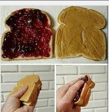

Peanut Butter and Jelly Sandwhich

A childhood classic, this supercalifragilisticexpialidocious recipe is sure to take you back to simpler times! Originating in 1901 in the Boston Cooking School Magazine of Culinary Science and Domestic Economics by Julia Davis Chandler (According to a breif google search) this recipe is a modern take on the over the hundred year old classic!
Ingrediants
Steps to Prepare
get two slices of chosent bread and set them on a plate.
get one knife and evenley spread peanut butter on one of the slices
Lick leftover peanut butter off the knife and put it away in the sink
Grab the other knife and spread jam over the other slice.
Lick off leftover jam and put knife away in the sink
Put the two slices togehter, with the coated saides facing eachother.
Enjoy!
Back to recipe list page